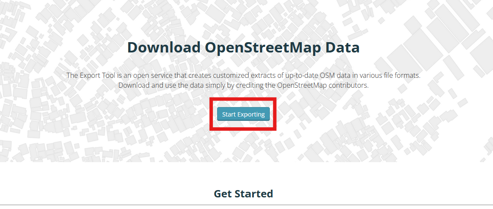
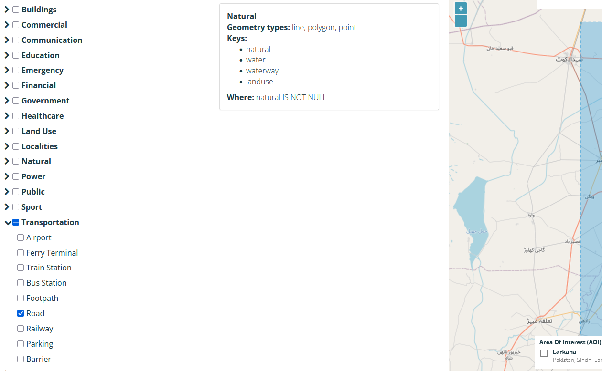

Exercise: OpenStreetMap data export#
Aim of the exercise:
This exercise aims to show two ways how to get OpenStreetMap (OSM) as a vector file into QGIS. We will use the HOT Export Tool to download specific data from Open
Larkana Flood Response Exercise Track
This exercise is part of the Larkana Flood Response Exercise Track
Competences covered in this exercise
Export OSM data using the HOT Export Tool.
Importing files into a QGIS project.
Adjusting the symbology of a layer.
Estimated time demand for the exercise
The exercise takes around 45 hours to complete and discuss, depending on the number of participants and their familiarity with computer systems.
Relevant wiki articles
Instructions for the trainers#
Trainers Corner
Prepare the training
Take the time to familiarise yourself with the exercise and the provided material.
Prepare a white-board. It can be either a physical whiteboard, a flip-chart, or a digital whiteboard (e.g. Miro board) where the participants can add their findings and questions.
Before starting the exercise, make sure everybody has installed QGIS and has downloaded and unzipped the data folder.
Check out How to do trainings? for some general tips on training conduction
Conduct the training
Introduction:
Introduce the idea and aim of the exercise.
Provide the download link and make sure everybody has unzipped the folder before beginning the tasks.
Follow-along:
Show and explain each step yourself at least twice and slow enough so everybody can see what you are doing, and follow along in their own QGIS-project.
Make sure that everybody is following along and doing the steps themselves by periodically asking if anybody needs help or if everybody is still following.
Be open and patient to every question or problem that might come up. Your participants are essentially multitasking by paying attention to your instructions and orienting themselves in their own QGIS-project.
Wrap up:
Leave time for any issues or questions concerning the tasks at the end of the exercise.
Leave some time for open questions.
Available Data#
Since the exercise is about finding data, there won’t be any data to download.
Instead download the standard folder structure here and save your data into the data/input-folder as you download it.
Tasks#
OpenStreetMap (OSM) is a collaborative, open-source project that creates free, editable maps of the world, built by a global community of mappers. There are multiple different ways how to download or export data from OpenStreetMap (OSM), each with it’s own advantage. In this exercise, we will go over the HOT Export Tool. At the bottom of this exercise, you can find a list of alternative tools.
Using the HOT Export Tool#
The HOT Export Tool is a tool for accessing OSM data offered by Humanitarian OpenStreetMap Team (HOT). HOT offers a browser-based tool to download OSM data with good options to specify region, time, feature type and data format. For our following analysis, we want to export the road network for the Larkana district in Pakistan.
Go to the HOT Export tool. To use the tool you need an OSM account. If you don’t have an account yet, you will need to create one. Click on
Log in. In the new window select the option to create a new account.If you have an OSM account, you can log in directly into the HOT Export tool by clicking on
Log in.Now we can start creating an OSM export. To do so, click on
Start Exporting. You will be directed to the export tool.
{kind=link}

In the export tool, you have a map canvas on the right and an input area on the left. On the map canvas, you determine the geographic location of the data you want to export. On the left side you determine the metadata of the export, the file format, and select which data will be downloaded (e.g., buildings, roads, hospitals, settlements, etc.)
On the left side, give your Export a name such as
Larkana Roads export 20250314and add a short description of what you are intending to download. In our case, we want to download the road network for Larkana in Pakistan. You can enter a project if you wish (e.g. GIS Training).
On the map canvas, search for Larkana in the search bar and select the district. The map will zoom in to show the district. This will also select the district as our area of interest. You can see this by the blue polygon. Our export will only download data that is located within this area.

Click
Next.Select the format you want to download. We recommend using GeoPackage
.gpkgbut GeoJSON and Shapefile are also fine. ClickNext.Under the data tab, we can select the key values we are interested in. We want to download to download the road network so we have to open the dropdown under
Transportationand check the box forRoads
{kind=link}

We are done adjusting the export. Click
Next. A summary page will open. Click onCreate Export. Your new export will begin

Bonus Exercise!
In the next exercise of the Larkana Flood Response Exercise track, we want to identify health facilities located in Larkana. Can you think of a way to export health facilities using the HOT Export Tool?
Arrange the layers on the map so you can see the new layer.
(optional) Use the classification function to get a better overview to get a better overview:
Right-click on the layer
Larkana_Roadsin theLayer Panel->Properties. A new window will open up with a vertical tab section on the left. Navigate to theSymbologytab.On the top you find a dropdown menu. Open it and choose
Categorized. UnderValueselect “highway”.Further down the window click on
Classify. Now you should see all unique values or attributes of the selected column. You can adjust the colours by double-clicking on one row in the central field. Once you are done, clickApplyandOKto close the symbology window.
As you can see, the HOT Export tool offers a good mix of flexibility and quick access to OSM data.
Advantages |
Disadvantages |
|---|---|
+ Good options for data selection |
- Many steps involved |
+ Many different data formats available |
- Only fixed option for data selection |
+ Easy to use |
|
+ Query can easily be repeated |
Alternative Tools#
Tip
The HOT Export Tool is a good way to export tailored OSM data for your personal use. However, in some use cases, you might want to choose a different tool such as Geofabrik, QuickOSM, or even just the humanitarian data exchange website. Below, you can find a short description of the tool and it’s advantages. You can find out how to use the different tools step by step on this wiki page.
Geofabrik, QuickOSM, HDX
Geofabrik
The Geofabrik website offers downloads for OSM data by regions. You can select a region of interest and download all the OSM data inside of that region. This is the most extensive method. We recommend using this method if you want to explore the OSM data or you need a lot of OSM data. However, if you only need specific data, such as roads, or settlement points, or buildings, it might be better to choose the HOT export tool or QuickOSM.
Advantages |
Disadvantages |
|---|---|
+ Quick access to complete OSM datasets |
- If one is only interested in specific features or regions (other then countries), not optimal |
+ Very up-to-date OSM exports |
- Large file size |
+ Clear documentation of which OSM features are contained in each shapefile |
- Only available as shapefile |
QuickOSM
The QuickOSM plugin allows you to load OSM data from inside your QGIS window. It is a quick and easy method, but requires the deepest knowledge about the OSM data model compared to the other options.
You will need to formulate a data query to find the data that you are looking for. To tailor your query based on the exact key and value you need there are two great resources:
OSM Wiki, and especially the Map features article.
This method has the advantage that you can specifically download the data that you need but you need to know how to formulate queries. To use QuickOSM, you have to install the QGIS plugin.
Advantages |
Disadvantages |
|---|---|
+ Query can be tailored for very specific data |
- Requires knowledge of OSM data model |
+ Data loads directly in QGIS |
- Building queries can quickly become complex |
+ Query can easily be repeated |
Humanitarian Data Exchange (HOT Exports)
A quick and easy way to get specific OSM data, such as the road network, or the locations of health facilities, is to search for the data on the humanitarian data exchange (HDX).
Here, the Humanitarian OpenStreetMap Team provides OSM exports for countries. The disadvantage of this method is that since the exports are for countries, the datasets are generally quite large and difficult to handle with QGIS.